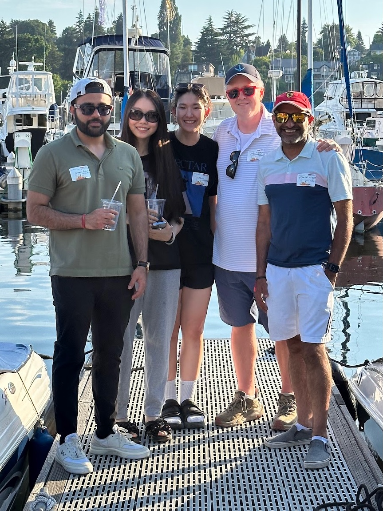
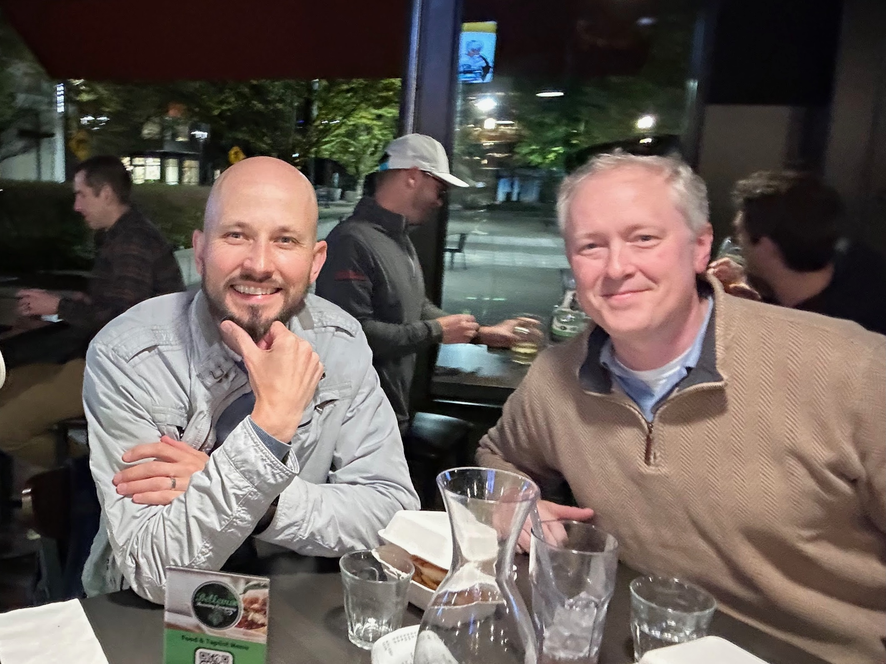
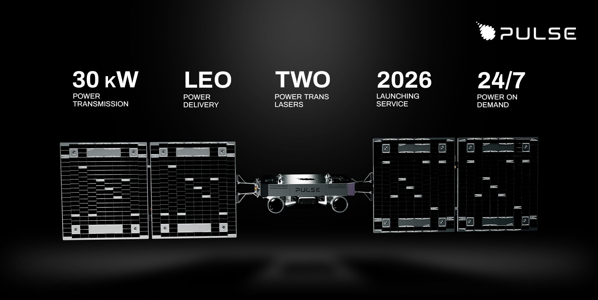
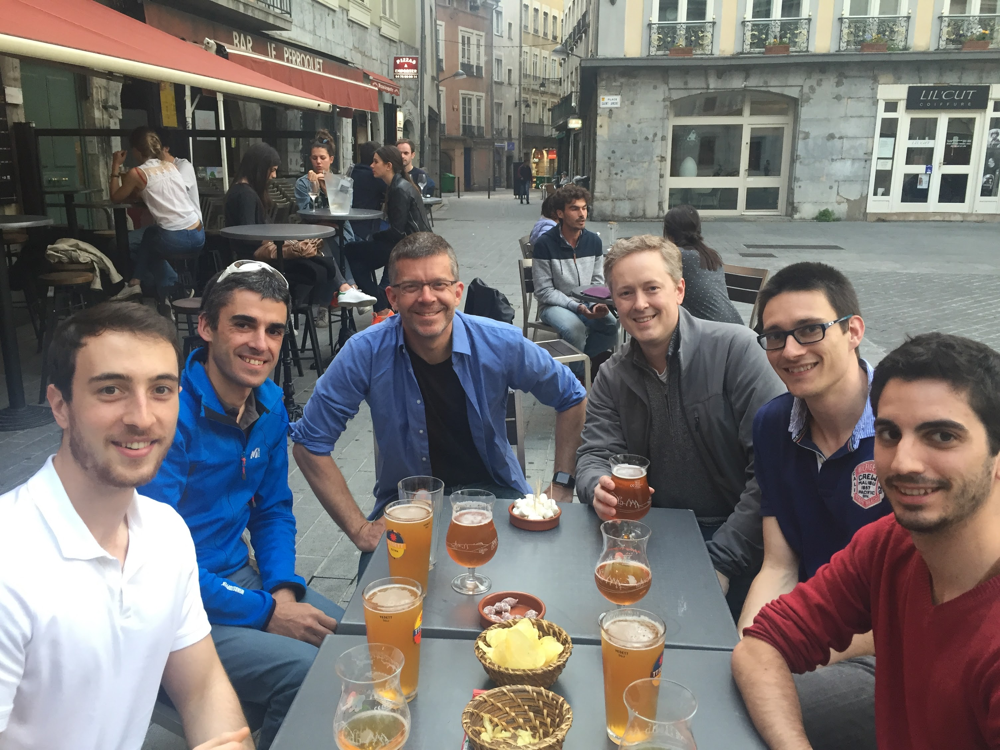
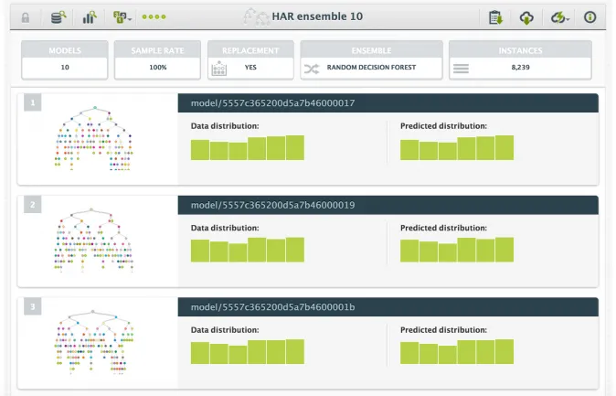

Hello! I’m Justin Donaldson, a passionate Human-Computer-Interaction/Data/AI Scientist and Engineer with a diverse skill set spanning large language model research, data science, and machine learning. My journey has led me from academia to industry, and back again. I’m always eager to learn something complex, and turn it into something beautiful.
What I know
 “All models are wrong, but some are useful”
“All models are wrong, but some are useful”
- George Box
My expertise encompasses model optimization, time series analysis, anomaly detection, and advanced ML/web visualization. I’m well-versed in programming languages like Python, R, and fluent with Docker and core web technologies. Over the years, I’ve had the opportunity to work on diverse and impactful projects with trusted Salesforce partners, crafting custom solutions ranging from advanced customer behavior modeling for banks to anomaly detection models for global enterprises. Make sure to check out my C.V. for more details.
My academic research focused on improving user interaction design and enhancing music recommendation systems through data visualization, social behavior analysis, and acoustic features. Notable studies include creating hybrid recommendation systems combining social and musical data, visualizing social network links for better exploratory search, and exploring aesthetic interaction design. My work also involves emotional experience design and the use of visualizations for music discovery. For further details, visit the publications section
 “There is no science without fancy and no art without fact.”
“There is no science without fancy and no art without fact.”
- Vladimir Nabokov
My patents span multiple areas in technology. They include systems for real-time media consumption visualization, decision tree interaction, and machine learning-based software testing. Other patents focus on improving large dataset task performance, secure predictive modeling, personal music recommendation systems, and error assignment in programming. Additionally, my work includes addressing biases in document retrieval and optimizing search rankings through machine learning techniques. These patents collectively aim to improve user interaction, software performance, and data analysis. Visit the patents section for more details.
I have made notable contributions to education and open-source development. As a co-instructor for UW 410 Advanced Machine Learning, I helped teach advanced machine learning concepts at the University of Washington. I also served on the UW Advisory Board for the School of Professional and Continuing Education. In the open-source space, I developed a Lua target for the Haxe language, which wound up enabling video games such as Pokemon Sword & Shield to run efficiently on the Nintendo Switch. Additionally, I mentored graduate students in data science through UCLA’s program and co-hosted a data science competition with Boston Day Academy. More details in the pro-bono section.
Curvo Labs (Chief Data Scientist)

I’m currently serving as Chief Data Scientist at Curvo Labs, where I’m leading data science initiatives and developing advanced machine learning solutions. This role allows me to continue pushing the boundaries of AI and data science while working on cutting-edge research and applications alongside CTO Franco Ponticelli and CEO Andy Perry.
Previously: Hushh.ai (CTO)

I helped start Hushh.ai, a company I co-founded with Manish Sainani in 2024. At Hushh, we pioneered on-device hybrid LLM search capabilities and nurtured a vibrant R&D culture with a talented team of international interns. You can read more about what we did over at Hushh Labs
Investor/Advisor
Since leaving Salesforce I invest and advise startups through the year. Here’s a few folks and organizations I believe you should be keeping your eye on.
Dagworks

I met Stefan and Elijah when they were just getting started building Dagworks.io. They had some of the same notions I had on the importance of Directed Acyclic Graphs as a fundamental programming theme. Their decorator-based approach for static methods creates the necessary coupling between imperative graph steps, and overall graph execution order in an especially elegant way. I believe most people will adopt it at some point if they are using Python to manage data. It’s just that good! You can try Dagworks Hamilton framework online, or check it out on Github. You can also follow their blog.

(Update: Dagworks has been acquired by Salesforce, while Hamilton and Burr have been accepted into the Apache Software Foundation as new projects)
PulseSpace

I met Karl Stedman and got a chance to hear about PulseSpace. PulseSpace’s goal is all about providing remote power for satellites. With the growth of the private space industry thanks to SpaceX and Blue Origin, there’s a whole ecosystem of young startups looking to provide service level agreements for orbital infrastructure. PulseSpace is looking to be a sort of “gas station” for satellites that may have malfunctioning or damaged solar panels. Even though I don’t have a background in astrophysics, I think they’re bound to run into all sorts of gnarly software problems that don’t fit easily into conventional industry applications.

Previously
Salesforce

Prior to Hushh.ai, I spent a rewarding decade at Salesforce, where I wore multiple hats as a Principal Data Scientist and Engineer. I had the privilege to lead early search infrastructure modernization projects like migrating the core search infrastructure to model-trained ranking coefficients, and also developed patented deep learning models for detecting error states in Salesforce’s enormous code base. Under Scott Rickard I co-founded the Search/Service Cloud Datascience team and contributed significantly to the creation of an ML education program for engineers. My contributions also extended to investigating and developing GPT-3 technologies.
BigML

Earlier in my career, I co-founded BigML and served as its President from 2011 to 2013. There, I spearheaded the development of interactive model and distribution visualizations and took charge of various administrative tasks, setting the foundation for the company’s growth.
 “Architects cannot teach nature anything.”
“Architects cannot teach nature anything.”
- Mark Twain
Let’s Connect!
I’m always eager to connect with like-minded professionals and enthusiasts. Feel free to reach out to me via: email, Twitter, LinkedIn, or explore my CV and GitHub
Looking forward to connecting with you!
© Copyright 2024 Justin Donaldson. Except where otherwise noted, all rights reserved. The views and opinions on this website are my own and do not represent my current or former employers.